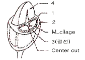
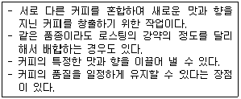
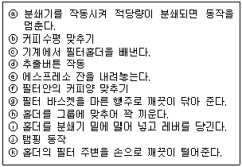
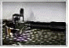
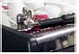
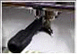
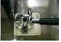

바리스타-2급 (2007-06-02 기출문제)
1과목: 커피학 개론
1. 로부스타 커피(Coffea Canephora)의 원산지로 알려진 나라는?
- 콩고
- 탄자니아
- 에디오피아
- 예멘
(정답률: 62%)

2. 커피과실에서 생콩(green beans)을 꺼내는 과정을 정제(精製)라고 하는데, 건식법을 이용한 정제과정에 대한 설명 중 틀린 것은?
- 건조과정 중 발효를 방지하기 위하여 매일 여러 번 섞어 주어야 한다.
- 수확한 과실을 건조장에서 넓게 펴고, 수분함량이 20%이하가 될 때까지 건조시킨다.
- 건조에 소요되는 일수는 과실의 숙도에 상관없이 일정하다.
- 아라비카종이나 로부스타종이나 모두 사용된다.
(정답률: 68%)
3. Washed coffee의 처리방법의 순서로 옳은 것은?
- hulling→drying→fermentation→pulping→washing→grading→cleaning
- pulping→fermentation→washing→hulling→drying→grading→cleaning
- pulping→fermentation→washing→drying→hulling→cleaning→grading
- fermentation→drying→washing→pulping→hulling→cleaning→grading
(정답률: 66%)
4. 커피 생산지에 대한 설명이다. 맞는 것은?
- 콜롬비아 커피는 양적으로 볼 때 세계 3위지만 품질이 낮은 것이 특징이다.
- 코스타리카에서 생산되는 커피 중 가장 유명한 커피로는 코나 엑스트라펜시 이다.
- 케냐에서 생산되는 Bean들은 크기에 따라 AA, A, B등으로 등급을 표기한다.
- 탄자니아 몬순 커피는 자연 건조법으로 가공한 생두에 계절풍으로 숙성시켜 가공한다.
(정답률: 72%)
5. 원두의 신선도를 저하시키는 요인과 가장 관계가 먼 것은?
- 시간
- 질소
- 온도
- 산소
(정답률: 78%)
6. 커피를 많이 마시면 가장 많이 보충해 주어야 할 영양소 및 무기질은?
- 칼륨
- 칼슘
- 비타민B
- 인산나트륨
(정답률: 73%)
7. 다음 중 커피를 담는 기구의 가장 위생적인 세척순서는?
- 찬물→비눗물→더운물
- 더운물→비눗물→찬물
- 비눗물→찬물→더운물
- 비눗물→더운물→찬물
(정답률: 62%)
8. 다음 중 서비스의 특성이라고 할 수 없는 것은?
- 무형성
- 소멸성
- 가변성
- 생산과 소비의 분리성
(정답률: 60%)
9. 다음 커피 재배에 관한 내용 중 틀린 것은?
- 커피의 성장에는 유기질이 풍부한 비옥토, 화산질 토양이 적당하다.
- 커피 씨앗이 발아하는 데는 보통 수주일 걸린다.
- 커피 열매는 길이 15~18mm의 되는 타원형으로 파치먼트라고 불린다.
- 발아 후 6~18개월 경과한 시점에 건강 상태가 양호한 나무들을 골라 재배할 곳에 옮겨 심는다.
(정답률: 49%)
10. Defect Beans (결점 두)와 발생 원인이 잘못 연결된 것은?
- Shells(조개 두)-불완전한 탈곡과정
- Twigs(나무 가지)-수확, 선별 과정의 원인
- Black Beans(블랙 빈)-늦은 수확, 흙과 장시간 접촉
- Unripe Beans(미성숙 두)-미성숙 상태 수확, 조기 수확
(정답률: 67%)
11. 커피 생두(Green Bean)를 평가하는 방법 중 틀린 것은?
- 생두는 일반적으로 색깔과 크기가 균일할수록 좋은 등급으로 취급된다.
- 결점수가 적은 커피가 좋은 커피이다.
- 청결도(은피 제거여부)는 가장 중요한 평가요소이다.
- 미성숙두(Immature Bean)는 평가항목에서 제외시킨다.
(정답률: 76%)
12. 커피의 Fair trade에 대한 설명이다. 틀린 것은?
- 페어 트레이드는 선진소비국과 후진생산국이 농산물의 안정적인 생산기반과 수급에 공헌하고 있다.
- 미국과 일본 등은 페어 트레이드를 통해 커피생산국의 커피가격 폭락에도 일정 가격이상을 지급하고 농업기술에 대한 훌륭한 정보를 제공하고 있다.
- 커피생산국은 페어 트레이드 가맹국가나 단체에게 일정한 품질의 커피를 공급하여 페어트레이드 가맹단체의 안정적인 영업활동에 큰 도움을 제공하고 있다.
- 페어트레이드가 자율적인 시장경제를 무시하고 가맹단체에 대한 의존도를 높인다고 하여 더 이상 시행되지 않고 있다.
(정답률: 68%)
13. 커피하우스 매니저의 관리업무에 대한 내용이다. 사실과 다른 것은?
- 매니저의 기본업무에는 매출분석, 원가분석, 마케팅 등이 포함된다.
- 매출분석은 원부재료의 공급과 인력의 원활한 배치를 위해 필요한 사항이다.
- 원가분석은 제품별 원가의 산정과 판매량을 분석하여 신메뉴 개발자료는 물론 집중권유 메뉴를 결정하는 중요한 자료이다.
- 마케팅은 판매량을 증가시키기 위한 적극적인 활동을 말하지만 logo나 design은 Brand Identity에 해당하는 것으로 마케팅 분야라고 할 수는 없다.
(정답률: 71%)
14. 생두의 크기를 나타내는 Screen Size에 대한 설명 중 틀린 것은?
- 생두의 등급을 나눌 때 사용하는 방법 중 하나이다.
- 일반적으로 스크린사이즈의 숫자가 클수록 생두의 크기가 크다.
- 마라고지페(Maragogype)종은 Screen Size 19번이다.
- 피베리의 기준점은 Screen Size 13번이다.
(정답률: 55%)
15. 커피의 향미를 표현하는 용어 중 커피Bean이나 가루를 코로 들이마셔 보아 맡게 되는 향기로서 플로랄(Floral), 스파이시(Spicy)등으로 표현할 수 있는 용어는?
- Flavor
- After Taste
- Fragrance
- Fruity
(정답률: 43%)
16. 다음 중 에티오피아에서 생산된 커피가 아닌 것은?
- Virgacheffe
- Harra
- Excelso
- Sidamo
(정답률: 52%)
17. 커피콩의 구입 시 포장에 명시된 상품명인 (Beazil Santos NO,2 ⦁screen 19⦁strictly soft)에서 "SCREEN 19의 의미는?
- 결점두의 혼입량에 의한 분류
- 커피콩의 크기에 의한 분류
- 투명도의 정도에 의한 분류
- 커피콩의 형태에 의한 분류
(정답률: 73%)
18. 과테말라에서 생산되는 생두의 상품명 뒤에 붙게 되는 SHB(Strictly Hard Bean)또는 HB(Hard Bean)등은 무엇을 의미하나?
- 생두의 재배 방법
- 생두의 결점두 비율
- 생두의 경작 고도
- 생두의 성숙 정도
(정답률: 62%)
19. 다음 성분 중에서 커피 생두(Green Bean)에 가장 많이 함유되어 있는 성분은?
- 단백질
- 지질
- 탄수화물
- 무기질
(정답률: 63%)
20. 커피의 향미를 변화시키는 요인들이다 틀린 것은?
- 커피의 수확시기를 놓치면 Rioy, Rubbery, Fermerted, Earthy등의 향이 포함될 수 있으므로 수확시기를 놓쳐서는 안된다.
- 생두의 저장기간이 길어지면 효소의 작용으로 유기성분이 감소하면서 Strawy와 Woody맛이 날 수 있다.
- 원두는 로스팅 과정 중 너무 약하게 볶아지면 Green, 속도가 느리면 Flat과 Baked, 속도가 빠르면 Tipped Flavor, 온도가 너무너무 높으면 Scorched(탄내)의 향미가 나게 된다.
- 원두를 로스팅 한 후 시간이 길어지면 캐러멜향이 더욱 강해지고 산소량이 풍부해져 마일드 한 맛과 깊은 향을 느낄 수 있는 시간이길어지게 된다.
(정답률: 69%)
21. 커피의 열매의 구조로 맞지 않은 것을 고르시오?

- 외과피(Skin)
- 과육(Fruit)
- 은피(Silver skin)
- 내과피(Parchment)
(정답률: 66%)
22. Decaffeinated 커피의 개발 이후 여러 가지 카페인 추출방법이 연구 되어져 왔다. 다음 중 카페인 추출방법이 아닌 것은?
- 용매 추출법
- 물 추출법
- 초임계 추출법
- 증류 추출법
(정답률: 72%)
23. New Crop인 생두의 밀도에 대한 설명 중 옳게 설명한 것은?
- 생두의 밀도가 높을수록 커피 로스팅은 쉬워진다.
- 밀도가 높을수록 커피의 맛과 향이 풍부하다.
- 고지대에서 재배된 커피나무의 생두는 저밀도이다.
- 생두 크기가 클수록 밀도가 높다.
(정답률: 70%)
24. 다음 중 커피 음용 시 인체에 미치는 작용이 아닌 것은?
- 신경흥분 작용
- 이뇨작용
- 소화액 분비 작용
- 혈압강하 작용
(정답률: 69%)
25. 다음의 내용에 해당하는 것을 고르시오.

- Blending
- Cupping
- Flavor
- Froth
(정답률: 78%)
26. 다음 중 식품의 부패 현상을 가장 잘 설명한 것은?
- 지방질 식품의 험기적 분해
- 지방질 식품의 호기적 분해
- 단백질 식품의 험기적 분해
- 단백질 식품의 호기적 분해
(정답률: 67%)
27. 커피체리를 수확하는 방법 중 Strip-Picked에 대한 설명 중 틀린 것은?
- Hand-Picked 방법에 비해 인건비 부담이 적다.
- 잘 익은 체리만을 선택적으로 수확하는 방법이다.
- 기계를 이용한 방식보다 생산성이 떨어진다.
- Hand-Picked 방법 보단 수확시간을 단축할 수 있다.
(정답률: 71%)
28. 커피 생두를 분류하는 screen의 크기에 대하여 올바른 것은?
- 1/44 inch
- 1/54 inch
- 1/64 inch
- 1/74 inch
(정답률: 75%)
29. 커피 추출액에 함유되어 있는 무기질 성분 중 가장 많이 함유되어 있는 성분은?
- 나트륨
- 인
- 칼륨
- 칼슘
(정답률: 73%)
30. 우유에 함유되어 있는 고형물 중에서 가장 많이 함유되어 있는 성분은?
- 카제인
- 칼슘
- 유당
- 철
(정답률: 46%)
2과목: 로스팅과 향미 평가(커피 배전)
31. 커피생콩에 함유된 탄수화물은 유리당류와 다당류로 나누어진다. 이들에 대하여 틀리게 설명한 것은?
- 커피생콩의 유리당류는 배전커피의 갈색이나 향기의 형성에 크게 영향을 미친다.
- 커피생콩의 유리당류에 속하는 주성분은 Sucrose이다.
- 커피생콩의 유리당류의 함량은 로부스타종 보다 아라비카종에 많다.
- 커피생콩의 유리당류의 함량은 배전 후에도 거의 감소되지 않는다.
(정답률: 57%)
32. 다음중 커피를 볶을 때, 갈변작용에 의해 생선되는 향기 성분들은?
- 허브향, 캐러멜 향, 초콜릿 향
- 고소한(Nutty) 향, 달콤한 향, 캐러멜 향
- 캐러멜 향, 초콜릿 향, 탄 내
- 송진 향, 향신료 향, 탄내
(정답률: 58%)
33. 커피생콩에 함유된 유리아미노산에 대하여 잘못 설명한 것은?
- 커피생콩의 함량은 약 0.3~0.8%로서 배전 콩 향기의 형성에 중요한 성분이다.
- 일부 아미노산은 배전 중 쓴맛 성분과 결합하여 갈색색소 성분으로 변화된다.
- 로부스타종의 경우 미숙한 콩과 성숙한 콩의 함량이 비슷하다.
- 커피생콩에 함유된 유리아미노산은 배전과정 중 거의 열분해로 소실된다.
(정답률: 58%)
34. 커피를 볶은 후, 커피의 볶음 상태를 확인할 때 지표가 될 수 없는 것은?
- 볶은 커피의 색깔
- 볶음 커피의 팽창도
- 커피의 종류
- 볶은 커피의 수율
(정답률: 70%)
35. 커피의 로스팅 정도에 따른 명도(L값)가 잘못된 것은?
- 미디움 - 24.2
- 하이 - 21.5
- 시티 - 18.5
- 풀시티 - 30.2
(정답률: 47%)
36. 커피생콩을 가열할 때, 화학적, 물리적 변화에 대한 시차 열분석 변화 중 틀리게 설명한 것은?
- 배전초기에 일어나는 흡열반응은 수분의 증발과 일부 성분의 탈수에 의한 것이다.
- 강배전 단계에서 일어나는 흡열반응은 생콩성분의 산화, 분해 및 연소에 의한 것이다.
- 배전시 중량감소에 있어서 초기감소는 주로 수분의 증발에 의한 것이고, 후반은 성분의 산화 및 분해에 의한 것이다.
- 배전콩 추출액의 갈색도는 배전후반에 급증한다.
(정답률: 36%)
37. 배전에 따른 커피콩의 물리적 변화에 대하여 틀리게 설명한 것은?
- 배전이 진행됨에 따라 커피콩의 비중은 감소된다.
- 배전이 진행됨에 따라 커피콩의 수분 함량이 감소된다.
- 배전이 진행됨에 따라 커피콩의 압축강도는 증가한다.
- 배전이 진행됨에 따라 세포내 성분은 gel상으로 유동화 된다.
(정답률: 53%)
38. 생두를 로스팅 할 때 양적 변화가 가장 큰 성분은?
- 아미노산
- 카페인
- 수분
- 지방
(정답률: 71%)
39. 다음 중 커피 볶기에 있어서 첫 번째 파열음(1차 파핑)이 일어난 직후 커피의 상태로 적합지 않은 것은?
- 표면에 주름이 생겼다.
- 은피가 남아 있는 경우도 있다.
- 오일이 나오기 시작했다.
- 고소한 냄새가 나며, 신맛이 강하다.
(정답률: 60%)
40. 다음 배전된 커피콩의 향미 성분 변화에 대한 설명 중 틀린 것은?
- 당분, 아미노산, 유기산 등이 배전과정을 거치며 갈변반응을 통해 향기성분으로 바뀐다.
- 생두의 당분, 유기산, 카페인, 무기질 등이 화학반응하여 신맛, 단맛, 쓴맛, 떫은 맛 등을 생성한다.
- 로부스타종보다 아라비카종에서 더 많이 생성된다.
- 프렌치, 이탈리안 로스트로 배전이 진행될수록 향기성분이 증가한다.
(정답률: 41%)
41. 커피 생두의 30%정도를 차지하며 배전 시 커피 특유의 갈색으로 변하게 하고 향기와 감칠맛을 증대시키는 역할을 하는 성분은?
- 섬유질
- 지질
- 당분
- 카페인
(정답률: 57%)
42. 커피콩을 로스팅할 때 일어나는 성분의 양적 변화 중 다른 하나는?
- Caffeine
- Free sugar
- Chlorogenic acid
- Trigonelline
(정답률: 55%)
43. 커핑시 이용되는 용어들이다. 부적합한 설명은?
- Taste - 혀로 느낄 수 있는 커피의 단맛, 신맛 및 쓴맛
- Aroma - 후각으로 느낄수 있는 커피에서 증발되는 냄새
- Aftertaste - 커피의 농도에 따른 무게감과 밀도에 대한 감각
- Flavor - 입속에 커피를 머금었을 때 후각과 미각으로 느껴지는 감각
(정답률: 71%)
44. 커피를 로스팅 할 때 일어나는 성분의 화학적 변화에 대한 설명 중 틀린 것은?
- 수분감소
- 당분의 감소
- 클로로젠산의 감소
- 지방질 감소
(정답률: 39%)
45. 커피의 향미품질 평가에 대한 SCAA의 기준이다. 틀린 것은?
- 커핑을 위한 커피추출은 침지(infusion)방법을 사용한다.
- 물과 커피의 비율은 물 150ml에 원두 7.25~8.25g을 사용한다.
- 물은 미네랄이 함유된 증류수로 약93℃ 정도의 물을 사용한다.
- 커피성분이 1.1~1.3%가 추출되도록 3~5분정도 기다린다.
(정답률: 38%)
3과목: 커피 추출
46. 사이폰(Siphon) 추출방식이라고도 하면 커피가 만들어지는 과정을 지켜볼 수 있어 시각적 효과가 좋은 커피추출방법을 무엇이라 하는가?
- 달임법
- 우려내기
- 모카포트방법
- 진공식 추출방법
(정답률: 63%)
47. 다음은 에스프레소 추출 동작들이다. 올바른 순서대로 정렬한 것은?

- ⓐ-ⓑ-ⓚ-ⓙ-ⓗ-ⓖ-ⓕ-ⓔ-ⓘ-ⓒ-ⓓ
- ⓒ-ⓖ-ⓐ-ⓚ-ⓑ-ⓗ-ⓙ-ⓘ-ⓕ-ⓔ-ⓓ
- ⓒ-ⓖ-ⓐ-ⓘ-ⓕ-ⓑ-ⓙ-ⓚ-ⓗ-ⓓ-ⓔ
- ⓒ-ⓐ-ⓑ-ⓘ-ⓙ-ⓚ-ⓔ-ⓕ-ⓗ-ⓖ-ⓓ
(정답률: 67%)
48. 과소추출(under extraction)의 원인과 이에 따른 현상에 대한 설명이다. 틀린 것은?
- 너무 굵은 입도의 분쇄커피의 사용
- 적정량보다 적은 양의 커피를 사용
- 과다추출(over extraction)보다 오랜 크레마의 지속성
- 기준온도 보다 낮은 추출 온도
(정답률: 73%)
49. 추출압력이 낮은 상태에서 긴 시간동안 추출된 커피의 특징이다. 틀린 것은?
- 짙은 갈색의 크레마와 하얀점
- 얇은 층의 크레마와 검은띠의 형성
- 강하고 쓴 신맛
- 얇은층의 크레마와 큰 거품 형성
(정답률: 48%)
50. 머신을 사용하여 추출한 에스프레소를 순수한 물과 비교하였을 때 틀린 것은?
- 굴절률이 증가 한다.
- 점도가 낮아진다.
- pH가 낮아진다.
- 밀도가 높아진다.
(정답률: 46%)
51. 다음 중 filter holder의 보관 방법 중 가장 좋은 것은?




(정답률: 73%)
52. 다음 추출 방식 중 투과법에 해당하지 않은 것은?
- 융드립
- 페이퍼드립
- 에스프레소
- 프렌치 프레스
(정답률: 53%)
53. 일반적 핸드드립식 추출법으로 커피를 추출할 때 물을 주입하는 과정에서의 주의점이다. 틀린 것은?
- 물을 붓는 위치를 계속 이동시킨다.
- 필터에 물을 직접 붓는다.
- 물은 가능한 커피가루와 가까운 위치에서 조심스럽게 부어준다.
- 드립퍼 안의 물이 마르게 해서는 안된다.
(정답률: 54%)
54. 다음 크레마의 설명 중 틀린 것은?
- 향기의 발산을 방해한다.
- 바로 로스팅한 신선한 원두에서는 더 두껍게 나타난다.
- 커피 추출 시 나오는 아교질과 커피오일의 결합체이다.
- 크레마는 샷 그래스에서 3~4mm정도 형성되면 아주 좋은 상태이다.
(정답률: 65%)
55. 일반적으로 그라인더를 작동한 후 얼마의 휴식 시간이 필요한가?
- 작동시간 1/2의 시간이 필요
- 작동시간 2배 이상의 시간이 필요
- 바로 사용해도 상관없음
- 무조건 5분 이상 휴식이 필요
(정답률: 64%)
56. 상업용 에스프레소 머신의 커피 추출 압력을 만드는 부품은?
- 보일러
- 모터펌프
- 분사필터
- 압력 게이지
(정답률: 50%)
57. 추출을 위한 분쇄 방법 중 틀린 설명은?
- 선택한 추출방법에 알맞은 분쇄입자를 선택해야 한다.
- 미분일수록 유효성분 추출이 용이해 좋은 맛의 커피를 추출할 수 있다.
- 분쇄 입자의 크기가 균일해야 양질의 성분을 일정하게 추출할 수 있다.
- 적합한 분쇄는 양질의 원두, 적절한 로스팅, 올바른 추출법과 함께 좋은 커피를 얻기 위한 중요한 요소이다.
(정답률: 73%)
58. Tamping에 관한 내용 중 틀린 것은?
- Tamping 전의 필터바스켓내의 커피의 평탄 작업이 중요하다.
- 적절한 압력을 유지하는 훈련이 필요하다.
- 필터바스켓내의 커피가 한쪽으로 치우치지 않도록 주의한다.
- 완벽한 에스프레소의 추출을 위해서 오랜 Tamping 시간이 필요하다.
(정답률: 76%)
59. 머신을 이용하여 Steamed Milk를 만드는 방법이다. 틀린 것은?
- 차가운 우유를 사용하는 것이 좋다.
- 스팀노즐을 깊게 담가 공기의 유입을 최소화한다.
- 우유의 온도가 너무 올라가지 않도록 주의한다.
- 거품이 형성되면 노즐을 피처 벽쪽으로 이동시켜 혼합한다.
(정답률: 72%)
60. 다음 중 커피 추출 시 사용하는 물에 관한 내용이다. 가장 올바른 것은?
- 정수된 물보다는 수돗물을 사용하는 것이 바람직하다.
- 신선하고 좋은 맛이어야 하며 냄새와 불순물이 없어야 한다.
- 이산화탄소가 남아있지 않은 깨끗한 물이 좋다.
- 100ppm이상의 미네랄이 함유되어 있는 물이 좋다.
(정답률: 81%)